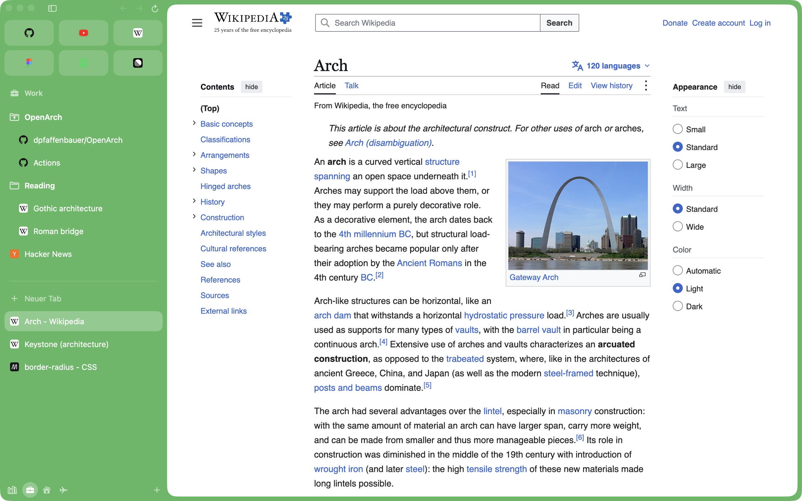
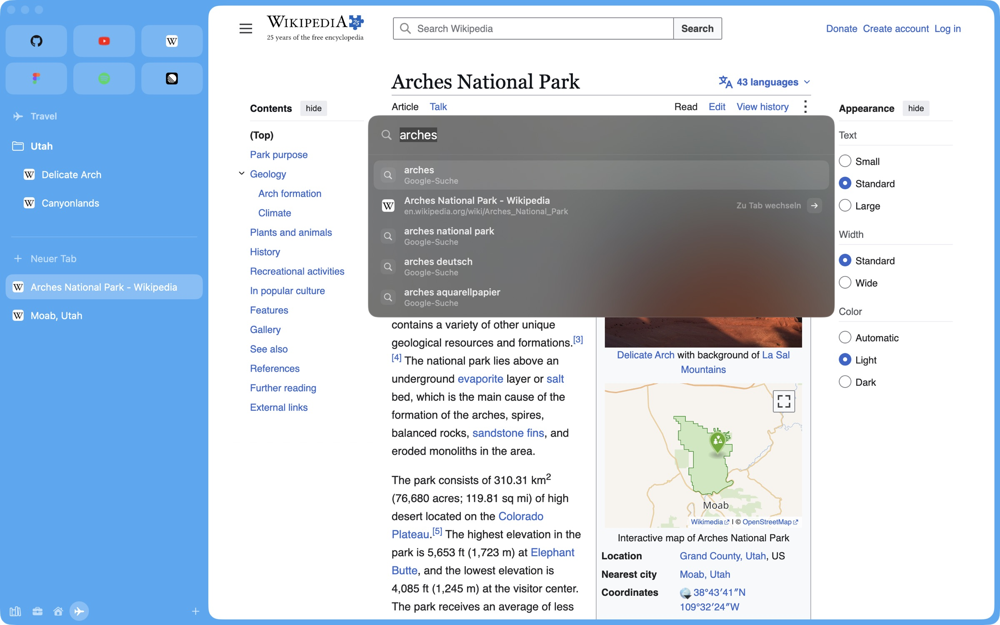
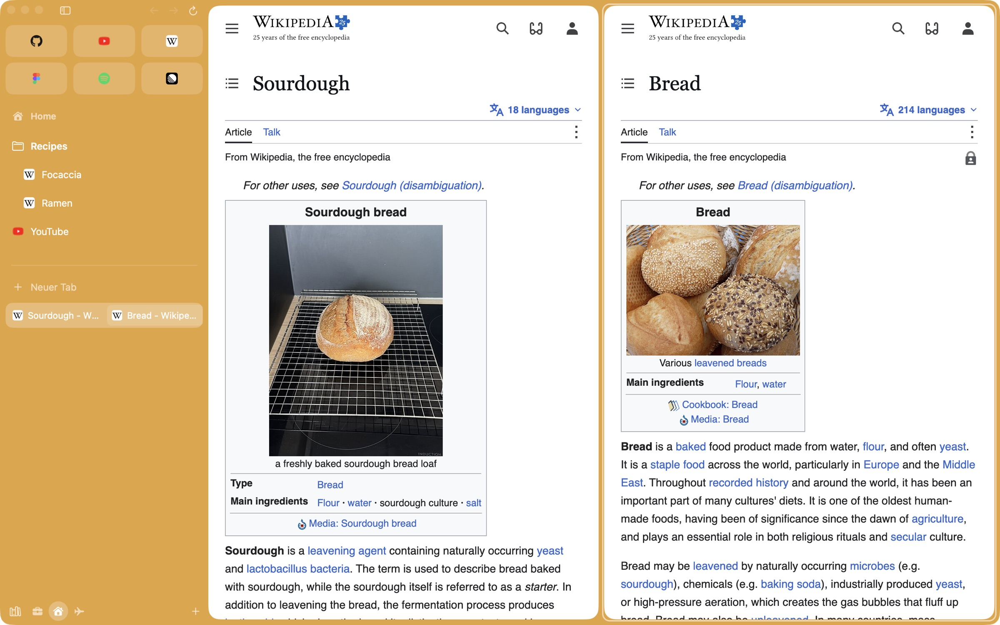
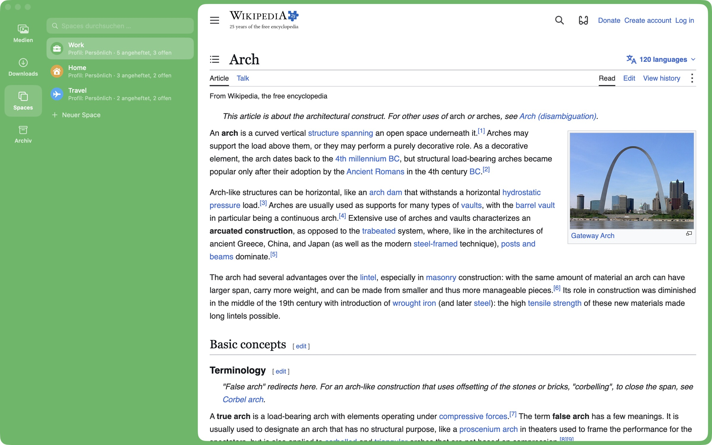

Arc stops working on December 22, 2026
Arc closes.
OpenArch opens.
The sidebar browser you know, rebuilt as open source on real Chrome. Your spaces, logins and extensions move over in one step.

Favorites, pinned folders and today’s tabs, in the sidebar you already know.
Everything comes along.
OpenArch reads your Arc data right on your Mac. No account, no upload. Arc stays untouched.
- Spaces, colors & icons
- Favorites
- Pinned tabs & folders
- Open tabs & split views
- Logins & cookies
- Saved passwords
- History
- Extensions & settings
⌘T · Travel
⌘T finds everything.
One field for addresses, searches, open tabs, pinned pages, history and commands. Enter takes you there, or straight back to the tab you already have.


⌃⇧= · Home
Two pages, one view.
Drag a tab onto the page, or onto another tab in the sidebar. Up to four pages side by side or stacked, with dividers you can drag.
⌃1–9 · Work
A space for every part of your day.
Each space has its own color, pinned folders and tabs. Give it a profile and it keeps its own logins and extensions, so work and private never mix.

And all the little things.
- Peek
- Links open in a card over the page. Keep, split, or Esc.
- Boosts
- Recolor a site, zap what annoys you, add your own CSS and JS.
- Site search and questions
- Type yt or gh, press Tab, search that site. A whole question goes to Claude or ChatGPT.
- Link rules
- Links from Mail or Slack go straight to the right space.
- Media controls
- What plays elsewhere shows in the sidebar, then picture-in-picture.
- Hover sidebar
- Hide it, touch the left edge, and it floats back.
- Real Chrome tabs
- Every extension from the Chrome Web Store, DevTools included.
- Updates by themselves
- Each new Chromium build, checked and installed when you quit.
Your hands already know it.
- ⌘TCommand bar
- ⌘SSidebar
- ⌘DPin tab
- ⌃1–9Spaces
- ⌃⇧=Split View
- ⌥⌘NLittle OpenArch
- ⌘⇧LLibrary
- ⌃⌘BBoost
- ⌘⇧TReopen tab
Let your agent drive.
Claude Code, Playwright or Puppeteer in your real browser, with your logins. Off by default; turn it on under Settings › KI.
claude mcp add openarch -- npx -y chrome-devtools-mcp@latest --browser-url=http://127.0.0.1:9222
Questions
Is this made by The Browser Company?
No. OpenArch is an independent open-source project. It is not affiliated with The Browser Company or Atlassian, and it contains no code from Arc.
macOS says it can’t check OpenArch for malware.
Early builds are not notarized yet. Move OpenArch to Applications, then allow it once under System Settings › Privacy & Security, or run xattr -dr com.apple.quarantine /Applications/OpenArch.app in Terminal. Updates install themselves after that.
How does OpenArch update?
It checks GitHub at launch and every six hours, verifies the checksum, and swaps itself the next time you quit.
Does it run on Intel Macs?
Not yet. Builds are for Apple silicon and macOS 15 or later.
What happens to my Arc data?
OpenArch only reads it. For logins and passwords, macOS asks you once whether OpenArch may use Arc’s key from your keychain.